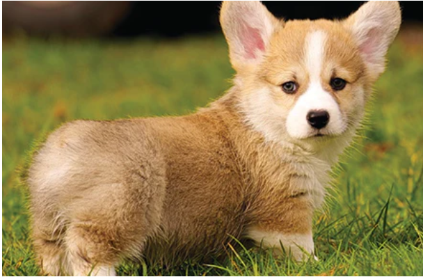

Sathwik Kondapaneni

Summary
Motivated Computer Science undergraduate with strong interest in Artificial Intelligence, Deep Learning, and Automation Systems. Experienced in building real-time AI applications and workflow automation systems using modern tools such as YOLOv8, n8n, and self-hosted AI infrastructure. Seeking an opportunity to apply technical and analytical skills in a challenging development environment.
🎓 Education
B.Tech in Computer Science Engineering
Vellore Institute of Technology – Andhra Pradesh (VIT-AP)
2022 – Present
Relevant Coursework:
- Deep Learning
- Data Structures & Algorithms
- Database Management Systems
- Linear Algebra & Probability
- Operating Systems
💼 Work Experience
AI & Automation Project Developer
Academic & Self-Initiated Projects
2024 – Present
Responsibilities:
- Developed a Real-Time Parking Lot Monitoring system using YOLOv8.
- Built automated AI workflows using n8n integrated with Ollama.
- Implemented webpage data extraction using Diffbot API.
- Designed and deployed self-hosted vector search systems using Qdrant.
- Worked on dataset preprocessing, annotation handling (XML), and model training using Google Colab.
🛠 Skills
Programming
AI & ML
- YOLOv8
- LSTM, ARIMA (conceptual knowledge)
- TensorFlow / Keras
- Model training & evaluation
Tools & Platforms
- Google Colab
- n8n
- Docker
- Qdrant
- Ollama
- Git & GitHub
🏆Certifications & Achievements
- DP-900 :Microsoft Azure Data Fundamentals (Score: 985/1000)
- Completed Deep Learning coursework (CSE4006)
- Developed AI-based academic projects in Computer Vision and Automation
- Active participant in technical project development and system design
{kind=link}
{kind=link}